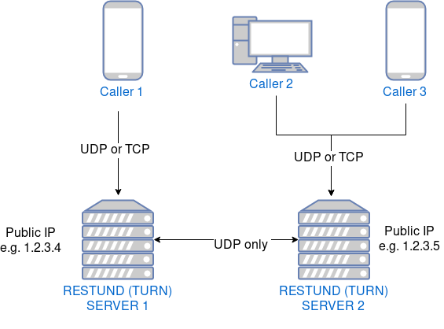
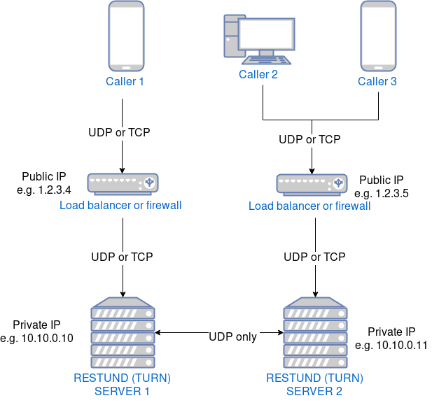
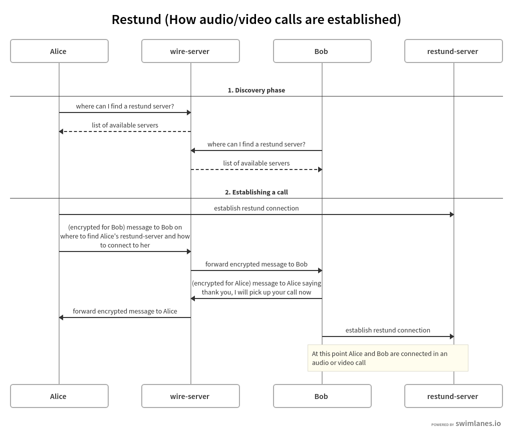

Restund (TURN) servers
Introduction
Restund servers allow two users on different networks (for example Alice who is in an office connected to an office router and Bob who is at home connected to a home router) to have a Wire audio or video call. More precisely:
Architecture
Since the restund servers help establishing a connection between two users, they need to be reachable by both of these users, which usually means they need to have a public IP address.
While one server is enough to get started, two servers provide high-availability in case one server gets into trouble. A Restund instance may communicate with other Restund instances.
You can either have restund servers directly exposed to the public internet:
Or you can have them reachable by fronting them with a firewall or load balancer machine that may have a different IP than the server where restund is installed:
What is it used for
Restund is used to assist in NAT-traversal. Its goal is to connect two clients who are (possibly both) behind NAT directly in a peer to peer fashion, for optimal call quality and lowest latency.
client A sends a UDP packet to Restund; which will get address-translated by the router. Restund then sends back to the client what the source IP and the source port was that Restund observed. If the client then communicates this to Client B, Client B will be able to send data to that IP,port pair over UDP if it does so quickly enough. Client A and B will then have a peer-to-peer leg.
This is not always possible (e.g. symmetric NAT makes this technique impossible, as the router will NAT a different source-port for each connection). In that case clients fall back to TURN, which asks Restund to allocate a relay address which relays packets between nodes A and B.
Restund servers need to have a wide range of ports open to allocate such relay addresses.
Network
As briefly mentioned above, a TURN server functions as a bridge between networks. Networks which don’t have a direct route defined between them, usually have distinct address blocks. Depending on the address block they are configured with - such block is either considered to be public or private (aka special-purpose addresses [RFC 6890])
In cases where a machine, that is hosting the TURN server, also connects to a private network in which other services are running, chances are that these services are being indirectly exposed through that TURN server.
To prevent this kind of exposure, a TURN server has to be configured with an inclusive
or exclusive list of address blocks to prevents undesired connections from being
established [1]. At the moment (Feb. 2021), this functionality is not yet available
with Restund on the application-level. Instead, the system-level firewall capabilities
must be utilized. The IP ranges
mentioned in the article [1] should be blocked for egress and, depending on the scenario,
also for ingress traffic. Tools like iptables or ufw can be used to set this up.
Protocols and open ports
Restund servers provide the best audio/video connections if end-user devices can connect to them via UDP.
In this case, a firewall (if any) needs to allow and/or forward the complete default port range for incoming UDP traffic.
Ports for allocations are allocated from the default port range, for more information on this port range, how to read and change it, and how to configure your firewall, see this note.
In case e.g. office firewall rules disallow UDP traffic in this range, there is a possibility to use TCP instead, at the expense of call quality.
Port 3478 is the default control port,
however one UDP port per active connection is required, so a whole port
range must be available and reachable from the outside.
If Conference Calling 2.0 (SFT) is enabled, a Restund instance, additionally, must be allowed to communicate with :SFT instances on the same UDP ports mentioned above. In this scenario a Restund server becomes sort of a proxy for the client, if the client is not able to establish a media channel between itself and the SFT server.
For more information, please refer to the source code of the Ansible role: restund.
Control ports
Restund listens for control messages on port 3478 on both UDP and TCP. It
also can listen on port 5349 which uses TLS. One can reconfigure both ports.
For example, port 5349 can be reconfigured to be port 443; so that TURN
traffic can not be distinguished from any other TLS traffic. This might help
with overcoming certain firewall restrictions. You can instead use (if that’s
easier with firewall rules) for example ports 80 and 443 (requires to
run restund as root) or do a redirect from a load balancer (if using one) to
redirect 443 -> 5349 and 80 -> 3478.
Amount of users and file descriptors
Each allocation (active connection by one participant) requires 1 or 2 file descriptors, so ensure you increase your file descriptor limits in case you have many users.
Currently one restund server can have a maximum of 64000 allocations. If you have more users than that in an active call, you need to deploy more restund servers.
Load balancing and high-availability
Load balancing is not possible, since STUN/TURN is a stateful protocol,
so UDP packets addressed to restund server 1, if by means of a load
balancer were to end up at restund server 2, would get dropped, as
the second server doesn’t know the source address.
High-availability is nevertheless ensured by having and advertising more than one restund server. Instead of the load balancer, the clients will switch their server if it fails.
Discovery and establishing a call
A simplified flow of how restund servers, along with the wire-server are used to establish a call:
DNS
Usually DNS records are used which point to the public IPs of the restund servers (or of the respective firewall or load balancer machines). These DNS names are then used when configuring wire-server.